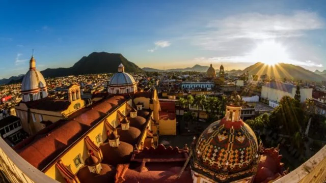
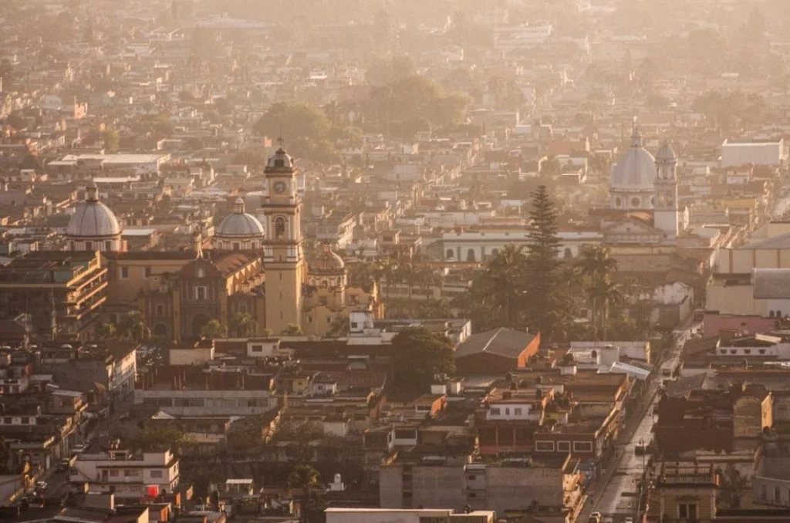
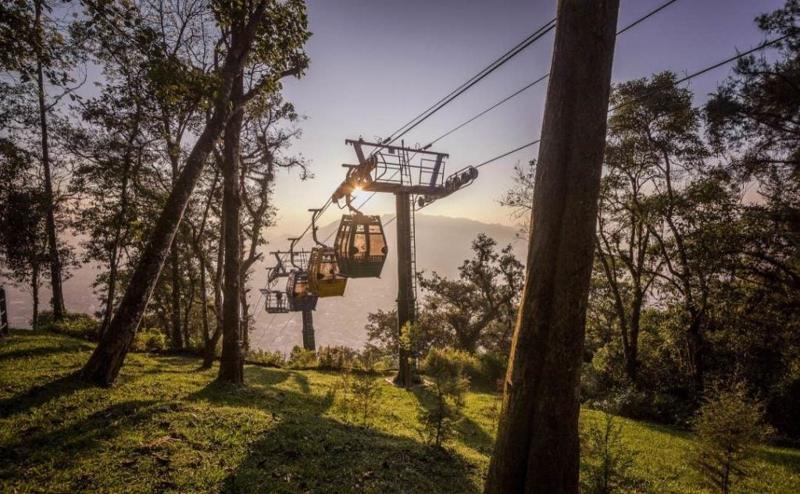
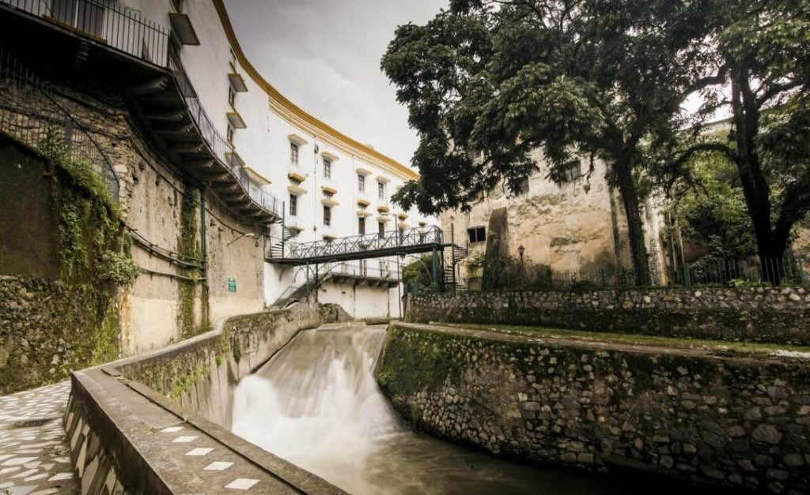

3 Experiencias para enamorarte en el Pueblo Mágico de Orizaba
Descubre el encanto que ofrece el Pueblo Mágico de Veracruz a través de cinco lugares que no puedes dejar pasar en tu próxima visita.
Centro histórico, testigo de la época colonial
Descubrir los vestigios de esta época —así como sus principales monumentos y edificios— será posible a través de caminar sus hermosas calles. Ejemplo de lo anterior se puede constatar con edificaciones como el Palacio Municipal de Orizaba, el cual alberga en su interior el único mural del artista José Clemente Orozco en la entidad; el Museo de Arte del Estado, un edificio antiguo donde encontrarás obras de reconocidos artistas como Diego Rivera, Johann Moritz Rugendas, José Justo Montiel, José María Velasco, entre otros.
No puedes dejar de visitar el Teatro Ignacio de la Llave, construido entre los años 1855 y 1875, considerado el primer teatro del país con una bóveda de madera. También podrás dar una vuelta en la Alameda, donde a tu paso descubrirás a los personajes del clásico de la infancia de algunas generaciones, como Cri-Cri.
Teleférico, una experiencia entre las alturas
Una manera de conocer el Pueblo Mágico de Orizaba es en las alturas. Los visitantes podrán hacerlo a través de su famoso teleférico que ofrece vistas privilegiadas a lo largo de sus 917 metros de longitud. Este teleférico es considerado el segundo con mayor altura, debido a que su punto más alto llega a una altura de 320 metros. Esta atracción será simplemente imperdible.
Al final del recorrido llegarás a la zona conocida como Cerro del Borrego donde te aguarda una impresionante vista panorámica desde su mirador. Quienes lo deseen podrán realizar actividades como un relajante picnic o si eres aventurero, no dudes en probar su tirolesa.
Paseo del Río
Este recorrido por la ribera es ideal para los que busquen actividades al aire libre en combinación con la arquitectura colonial; se divide en dos partes: la del norte, que lleva por la Reserva Animal. Aquí podrás ver diferentes especies como cocodrilos, venados, monos araña, avestruces, tigres, entre otras especies. La otra ruta te llevará por el llamado Paseo del Arte, que tiene una propuesta más cultural con esculturas y pinturas.
